布袋沟13# 矿硐KEP静压注浆封堵
1 KEP注浆材料优良性能
① 保持弹塑性(能和矿硐及围岩裂隙保持协调变形)；
② 微膨胀不收缩(达到长期封堵预期效果)；
③ 耐酸、碱、盐(抗腐蚀能力强、抗剪切强度高)；
④ 固化/稳定化重金属（可用于S/S）。
2 KEP技术含义
KEP技术包括两部分，即KEP材料制备技术+KEP静压注浆技术。鉴于KEP材料具有持续的弹塑性物理性能(Keep Elastic Plastic)，故简称为KEP技术。
2.1 KEP核心技术体系
KEP材料+精准勘查+静压注浆+全程监测
2.2 KEP材料制备工艺

3 BDGD13矿硐施工档案
硐口坐标X:3614064.165,Y:409606.273,Z:521.00,硐口坡高10.65m,矿硐硐口底宽1.69m,顶宽1.25m,左壁高1.30m,右壁高1.33m, 顶中高1.57m。矿硐封堵期间未见涌水(见图1-1、图1-2),矿硐长度196.6m,矿硐注浆量1727.25m,施工日期2022年6月24日，竣工日期2022年7月17日。
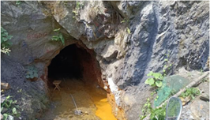
图1-1 BDGD13矿硐硐口原貌
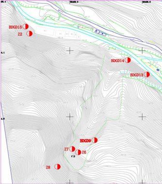
图1-2 BDGD13矿硐地理位置
3.1 矿硐展布形态
BDGD13#矿硐展布不规则，平面呈“L”字形态(通过硐内物探所得矿硐形态见图2)。矿硐掘进总长度196.6m,硐口掘进方向为南西200°。其中主矿硐长162.60m,宽1.26～5.19m,硐高0.98～2.37m; 左支硐一长8.00m,宽1.74～2.52m,硐高1.65～1.79m,支硐内矿渣堆高0.85～1.00m,走向南东95°;左支硐二长9.00m,宽1.73～2.03m, 硐高1.40～1.95m, 支硐内矿渣堆高0.75～1.20m,走向北东84°;右支硐一长8.00m,宽1.35～1.83m,硐高1.35～1.86m,支硐内矿渣堆高0.60～0.90m,走向北西280°;右支硐二长9.00m,宽1.16～1.91m, 高1.01～3.49m,走向南东93°。
主矿硐掘进至66.00m处，开拓左支硐一，掘进方向为南东95%; 掘进至79m处，开拓左支硐二，掘进方向为北东84;掘进至80.6m 处，开拓右支硐一，掘进方向为北西280°;掘进至126.0m处，开拓右支硐二，掘进方向为南东93°。主矿硐122～142m段，硐室底板坡度23°～39°,坡高10.13m,为矿渣堆积台阶，台阶已垮塌(图3)。主矿硐最窄处仅容1人通过，硐底见车辙印，矿硐中空气阴凉潮湿，伴有硫磺气味。
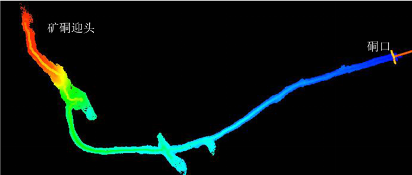
图2 BDGD13矿硐物探成像
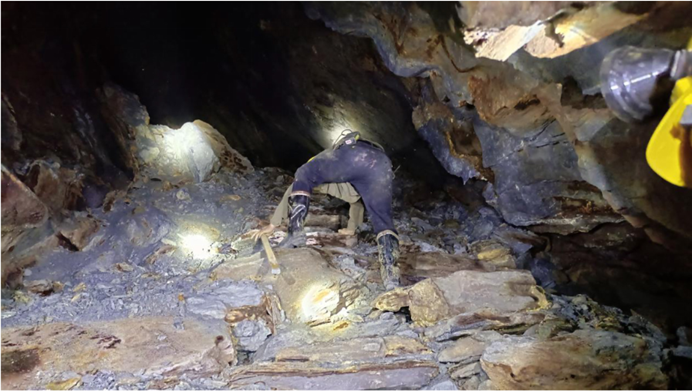
图3 122-142m段矿渣堆积台阶（已垮塌）
3.2 矿硐构造裂隙发育情况
BDGD13#矿硐内岩石主要为含炭绢云母石英片岩、炭质片岩及石英片岩，岩层产状8°～10°∠84°～85°、189°～224°∠60°～69°,风化面呈黄褐色、灰黄色，新鲜面呈灰黑色、银灰色，变晶结构，片理构造，片理面可见鳞片状排列的绢云母，节理裂隙发育，节理裂隙面铁质、泥质、硫化物浸染严重，见方解石脉及石英脉，厚1～5mm,片理经历不同构造运动变形改造，发生了强烈的揉皱变形。
硐室岩体发育3组优势裂隙，走向70°～90°、270°～280°、310°～ 340°,缓倾角0～30°占比6.2%,中倾角30～60°占比35.8%,陡倾角60～90°占比58.0%。部分裂隙贯穿整个矿硐三壁（图4），裂隙宽度1～12mm,铁质、泥质、硫化物充填，裂隙形态主要为波状、不规则状，部分裂隙有磺水渗出。
硐内构造发育强烈，主矿硐87～90m处绢云母石英片岩发育斜卧式揉皱，两翼产状9°∠69°、38°∠54°,核部塑性变形严重，沿核部有少量的磺水渗出，见图5。
主矿硐90m处发育破碎带，破碎带宽0.3～0.8m,产状10°∠80°, 破碎带内岩石破碎，母岩成分为绢云母石英片岩，碎岩块呈次棱角状，直径2～23cm,沿破碎带有少量的磺水渗出。
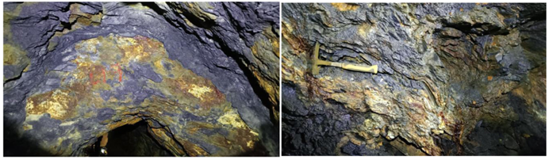
图4、5 贯穿裂隙和揉皱
3.3 出水状况
矿硐打开后，发现硐内大量积水，水深约30cm,底泥厚度20cm, 勘查期间经人工抽排并清理完成。
主矿硐4.0～119.0m范围内硐顶和两壁湿润，部分地段出现出水，通过对矿硐出水点统计，矿硐出水点共有6处，全部分布于主矿硐内，W1位于主矿硐4.0m,沿硐顶裂隙滴水；W2位于主矿硐23.0m, 沿硐顶裂隙滴水；W3位于主矿硐34.5m,沿硐顶裂隙涌水；W4位于主矿硐87.0m,沿硐顶裂隙滴水；W5位于主矿硐113.0m,沿硐顶裂隙滴水；W6位于主矿硐119.0m,沿硐顶裂隙渗水。矿硐充水水源为构造裂隙水和大气降水，主要通过节理裂隙及层间裂隙进入采空矿硐。
出水区的两壁底部堆积大量泥质沉淀物。主矿硐4.0～13.4m渗水段伴有黄色絮状硫化物析出，于硐顶形成黄色、黄褐色沉淀物；33.0～37.0m渗水段伴有黄色絮状硫化物析出，于硐壁形成黄色、黄褐色石帘，长短不一，见图6。
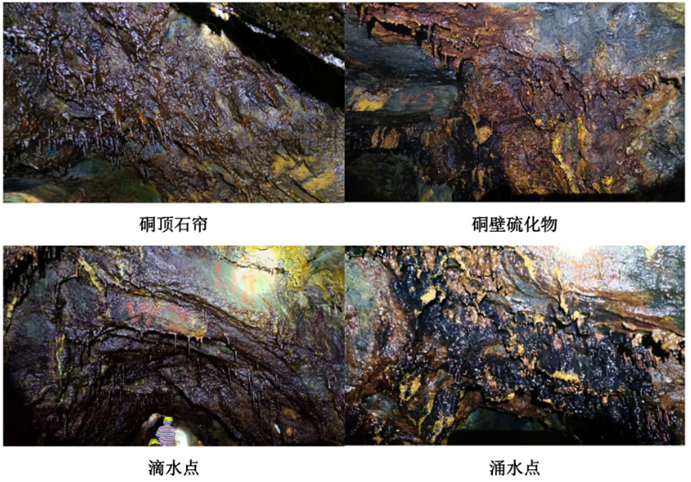
图6 矿硐出水原貌
硐口原貌
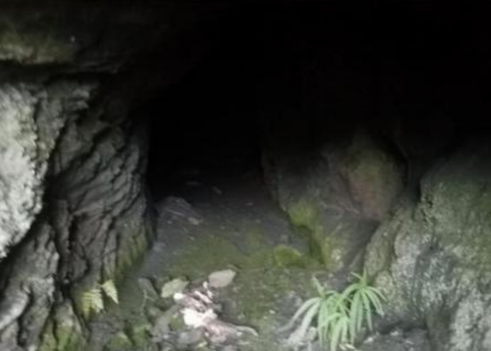
物探成像
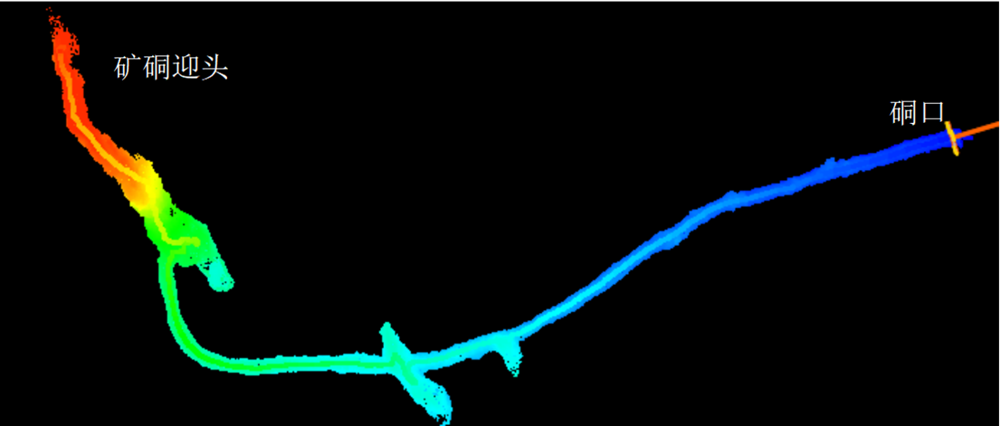
三维动画
挡墙砌筑
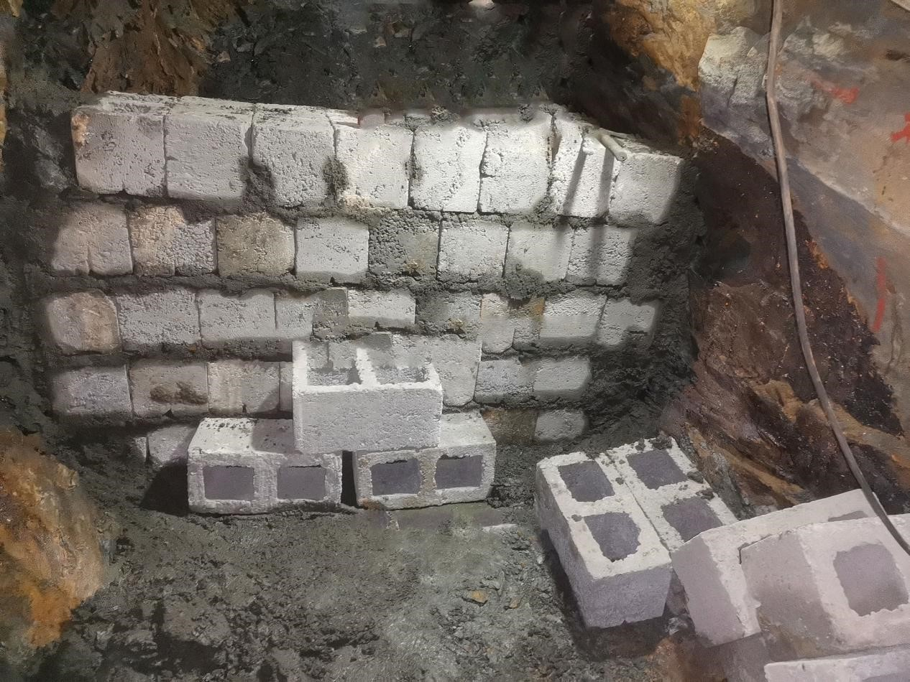
挡墙
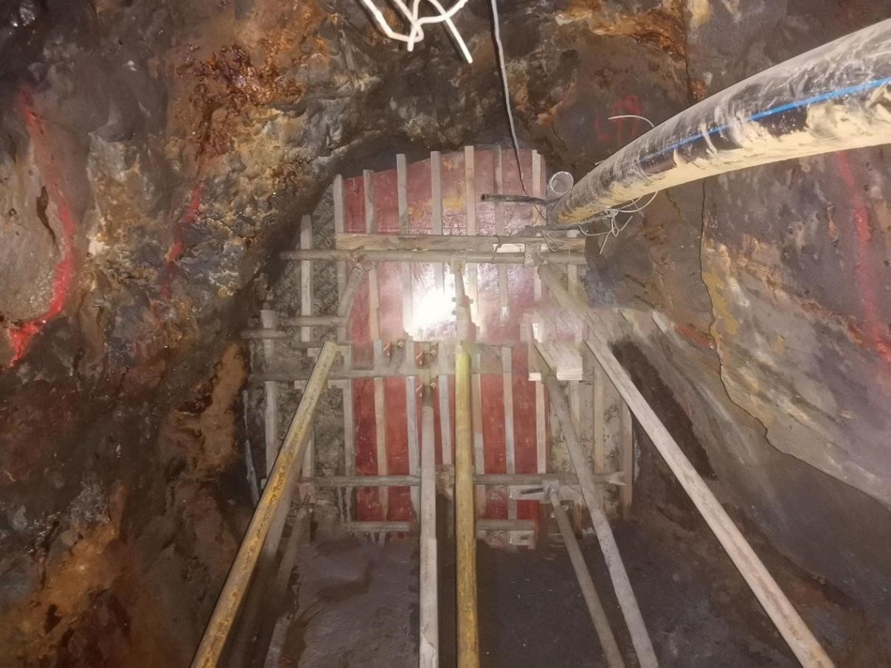
视频监控
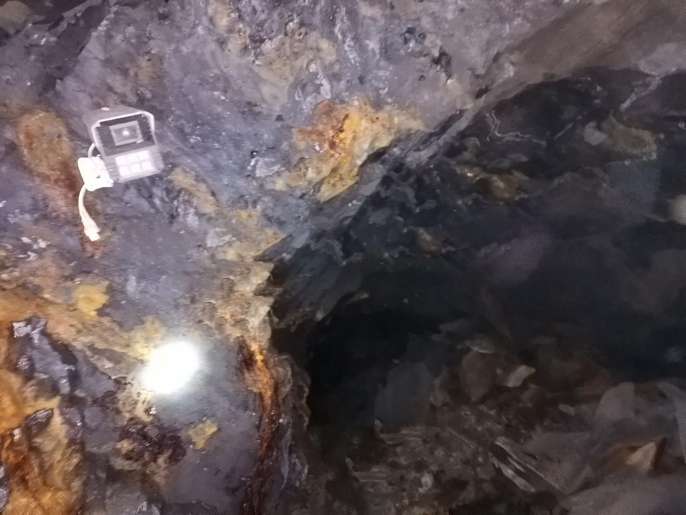
注浆管及排气管
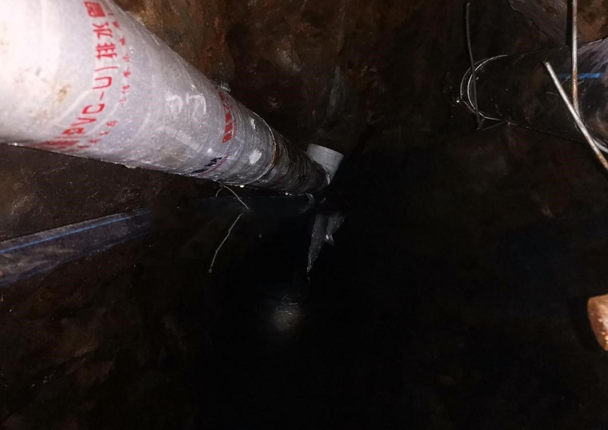
注浆视频
封堵后硐口
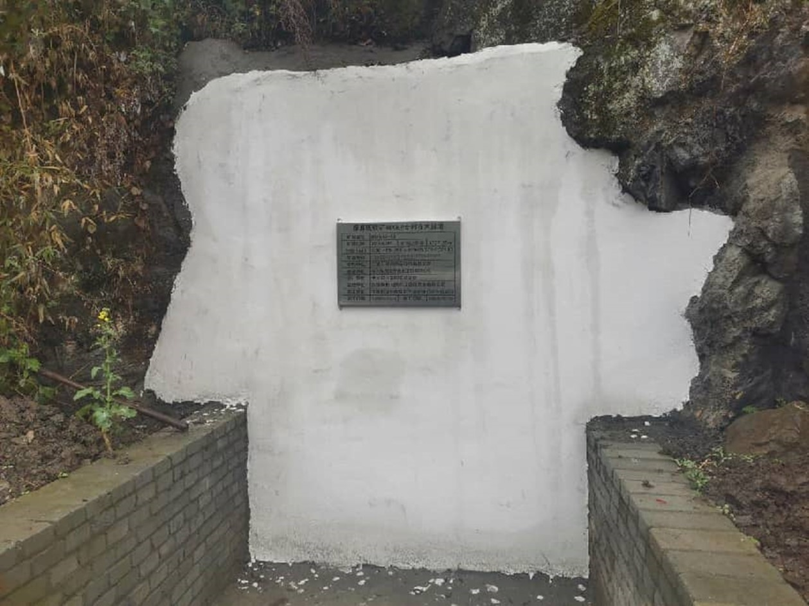